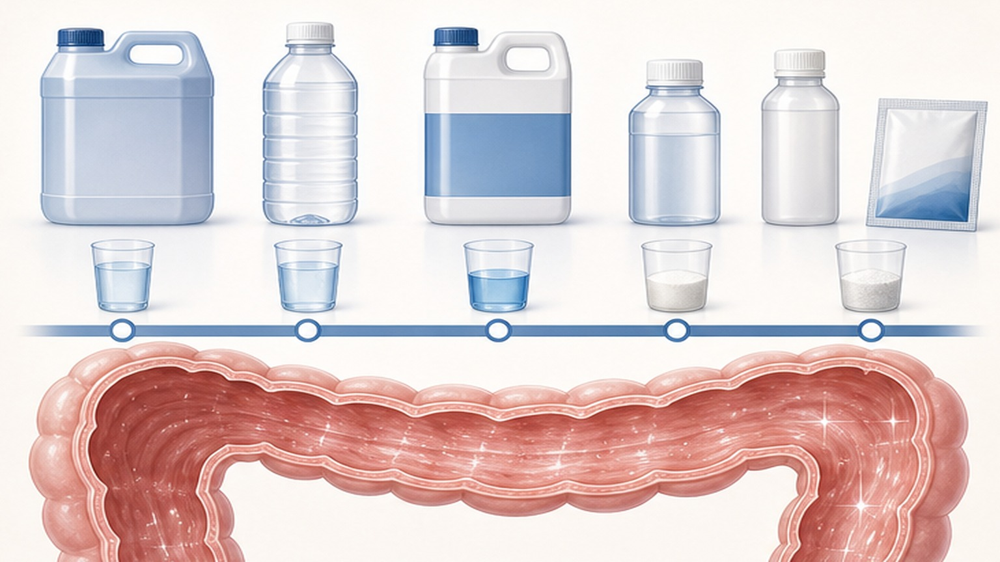
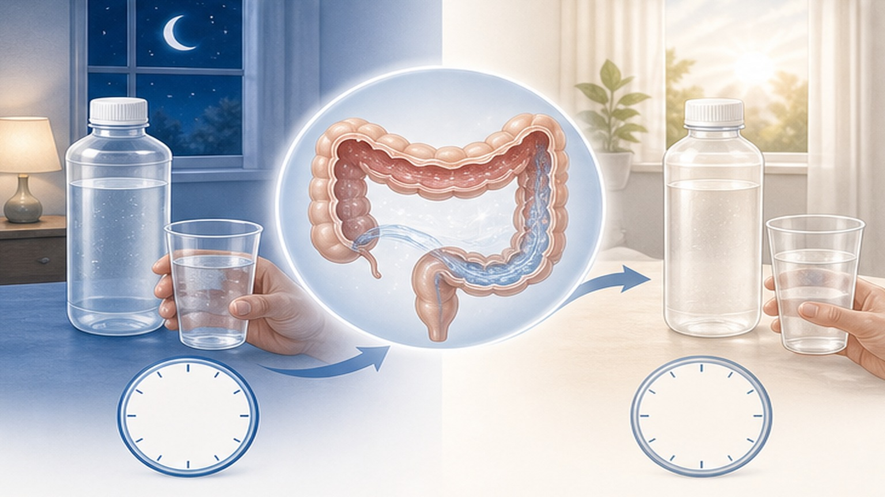

대장내시경 장정결,
1L 저용량으로 4L만큼 깨끗하게
1L PEG-ascorbate 장정결제는 4L PEG와 동등 이상의 청결도와 더 높은 환자 만족·재시행 의향을 보입니다 — Annals of Internal Medicine 2026 근거
대장내시경, 가장 큰 부담은 "장정결"
환자 수용성이 검진 대장내시경의 최대 장벽 — 1L 저용량 제제가 이를 해결합니다
표준 장정결제
다기관 RCT (이탈리아 7개 병원)
의향 유의하게 상승
장정결이란 무엇인가
대장내시경 검사 정확도는 "얼마나 깨끗하게 비웠는가"에 직접 비례합니다
왜 장정결이 중요한가
- 병변 발견율 — 청결도가 떨어지면 5mm 미만 폴립·조기 암 놓침
- 검사 시간 — 청결도가 낮으면 세척·재검 필요, 진정 시간 연장
- 재검 주기 — 부적절 청결 시 1년 내 재검 권고 (의료비 부담)
- 환자 경험 — 4L PEG는 절반이 완복 못함, 다음 검진 회피 원인
장정결제 옵션 비교
1L · 2L · 4L 세 가지 분할 복용 비교 — 최신 RCT 결과 기반

1L 저용량이 특히 도움되는 환자 6군
아래 해당하는 분은 1L PEG-ascorbate를 1차 권장합니다
노인 (≥65세)
4L PEG 완복 어려움, 탈수·전해질 변동 위험 큰 연령군. 저용량으로 부담 절감.
신기능 저하
eGFR 30~60 환자. 인산염 제제 금기, PEG 계열 안전. 저용량이 수액 부담 감소.
심부전 동반
대량 수분 섭취 시 폐부종 위험. 1L PEG-ascorbate는 부피 부담을 절반 이상 줄입니다.
과거 prep 실패
이전 검사에서 4L PEG 완복 못해 재검 권고 받은 분. 1L가 완복률을 직접 개선.
메스꺼움·구토 예민
PEG 짠맛에 민감한 환자. 1L PEG-ascorbate는 단맛(아스코르브산) 보강.
반복 검진 대상자
5년·10년 정기 대장내시경 대상자. "다음에도 받겠다" 의향 유지가 핵심.
안전성 시그널 — 3가지 제제 동등
전해질 변동·신기능·심혈관·구토 모두 의미 있는 차이 없음
주요 안전성 결과
- 전해질 (Na/K/Cl) — 3군 모두 임상적 변동 없음
- 신기능 (Cr, eGFR) — 의미 있는 변동 없음
- 이상반응 (오심·복통) — 발생률 비슷
- 심각한 부작용 — 3군 모두 보고 없음
1L PEG-ascorbate 분할 복용법
검사 전날 저녁 + 당일 아침 — 분할(split-dose)이 핵심
흰쌀밥·계란·두부 등 가벼운 음식. 잡곡·채소·과일 껍질 제외.
PEG-ascorbate 0.5L를 1~2시간 동안 천천히 + 추가 물 0.25L.
검사 4~6시간 전 0.5L 추가 + 물 0.25L. 마지막 음용 검사 2시간 전 종료.
대변이 옅은 노란 액체 상태면 합격. 갈색·고형물 잔류 시 의료진 확인.

검사 3일 전부터 식이 준비
단계적 식이 조절이 청결도를 결정적으로 좌우합니다
3일 전
씨·껍질 있는 과일·채소(키위·딸기·옥수수·콩) 제외. 일반식 가능.
2일 전
잡곡·현미·식이섬유 보충제 중단. 흰쌀·계란·두부·생선 등 부드러운 음식으로.
1일 전 (아침·점심)
저잔사식 (흰쌀죽·미음·계란찜·맑은 국). 18시까지만 식사.
1일 전 저녁부터
금식. 맑은 액체(물·이온음료·맑은 사이다·연한 차)만 가능.
당일 새벽
PEG 2차 복용 후에는 물·꿀물만. 검사 2시간 전부터 완전 금식.
금지 사항
붉은·보라색 음료(포도주스·붉은 이온음료·우유·요거트·죽) — 출혈로 오인 위험.
검사 전 약물 조정
약물별 중단 시점 — 임의 중단 금지, 담당의와 사전 확인 필수
철분제·지사제
검사 7일 전부터 중단 — 변을 검게 만들어 청결도 평가에 방해.
항혈전제 (와파린·DOAC)
조직검사·용종절제 가능성 있으면 3~5일 전 중단 검토. 심방세동·기계판막은 brige 필요.
당뇨약 (인슐린·SGLT2i)
전날 저녁부터 용량 절반 또는 중단. SGLT2 억제제는 3일 전 중단 (DKA 위험).
고혈압·심장약
검사 당일 소량 물과 함께 평소대로 복용 가능. 이뇨제만 검사 당일 1회 거르기.
즉시 클리닉에 연락해야 할 증상 6가지
장정결제 복용 중 또는 검사 전후 발생 시 즉시 알려주세요
반복 구토
PEG 복용 후 3회 이상 토해 거의 못 마신 경우. 1L도 못 채우면 검사 연기 검토.
심한 복통·복부팽만
참기 어려운 통증, 배가 빵빵하고 가스 안 나옴 — 장폐색 가능성, 즉시 평가.
혈변·검은 변
붉은 음식 섭취 없이 혈변·흑색변. 출혈 평가 필요.
어지러움·실신
탈수·저혈압 신호. 의자에 앉아 다리 올리고 물·이온음료 보충 + 연락.
두근거림·부정맥
전해질 변동 가능성. 심장약 복용자는 특히 주의 — 즉시 진료.
고열·오한
38℃ 이상 발열 — 다른 감염 또는 장 천공 신호 가능, 검사 연기 필요.
검사 성공을 위한 체크리스트 7가지
하나라도 빠지면 청결도가 낮아질 수 있습니다
3일 전부터 식이 단계적 조절
씨·껍질·잡곡 단계적 제거. 흰쌀·계란·두부 위주로 전환.
복용약 사전 확인
철분제 7일·SGLT2 3일·항혈전제 3~5일 전 중단 여부 확인.
PEG 분할 복용 (전날 저녁 + 당일 새벽)
한 번에 다 마시지 말고 1~2시간 동안 천천히. 추가 물 잊지 마세요.
대변 상태 확인
노란 액체 = 완료. 갈색·고형 잔류 시 의료진에게 사진 보내기.
맑은 액체만 (붉은색 금지)
물·맑은 사과주스·이온음료(흰색)·맑은 차. 우유·요거트·붉은 음료 금지.
검사 2시간 전 음용 완전 중단
진정·마취 안전을 위해 물도 금지. 약은 최소량 물과 함께만.
동행자 + 검사 후 휴식
진정 후 운전 금지 — 가족·지인 동행 필요. 검사 당일은 일정 비우기.
대장내시경, 부담은 줄이고
정확도는 그대로
1L 저용량 장정결 — 검사 전 궁금한 점은 언제든 문의해 주세요
광교중앙로 298, 4층
토요일 08:30~13:30
같은 자료를 다시 볼 수 있어요